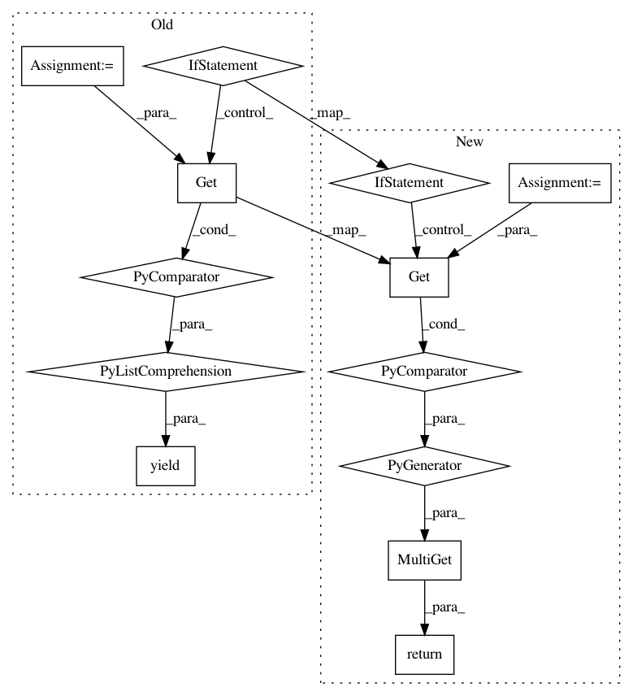

fc3fbd5d49556987f670fa71dc5a06c54d2f2d47,src/python/pants/engine/legacy/graph.py,,find_owners,#Any#Any#Any#,395
Before Change
else:
// Otherwise: find dependees.
all_addresses = yield Get(BuildFileAddresses, Specs((DescendantAddresses(""),)))
all_structs = yield [Get(HydratedStruct, Address, a.to_address()) for a in all_addresses]
all_structs = [s.value for s in all_structs]
bfa = build_configuration.registered_aliases()
graph = _DependentGraph.from_iterable(target_types_from_build_file_aliases(bfa),
address_mapper,
all_structs)
if owners_request.include_dependees == "direct":
yield BuildFileAddresses(tuple(graph.dependents_of_addresses(direct_owners)))
else:
assert owners_request.include_dependees == "transitive"
yield BuildFileAddresses(tuple(graph.transitive_dependents_of_addresses(direct_owners)))
@rule
def transitive_hydrated_targets(
After Change
else:
// Otherwise: find dependees.
all_addresses = await Get(BuildFileAddresses, Specs((DescendantAddresses(""),)))
all_hydrated_structs = await MultiGet(
Get(HydratedStruct, Address, a.to_address()) for a in all_addresses
)
all_structs = [hs.value for hs in all_hydrated_structs]
bfa = build_configuration.registered_aliases()
graph = _DependentGraph.from_iterable(target_types_from_build_file_aliases(bfa),
address_mapper,
all_structs)
if owners_request.include_dependees == "direct":
return BuildFileAddresses(tuple(graph.dependents_of_addresses(direct_owners)))
else:
assert owners_request.include_dependees == "transitive"
return BuildFileAddresses(tuple(graph.transitive_dependents_of_addresses(direct_owners)))
@rule
async def transitive_hydrated_targets(
In pattern: SUPERPATTERN
Frequency: 3
Non-data size: 13
Instances
Project Name: pantsbuild/pants
Commit Name: fc3fbd5d49556987f670fa71dc5a06c54d2f2d47
Time: 2019-11-21
Author: ericarellano@me.com
File Name: src/python/pants/engine/legacy/graph.py
Class Name:
Method Name: find_owners
Project Name: pantsbuild/pants
Commit Name: fc3fbd5d49556987f670fa71dc5a06c54d2f2d47
Time: 2019-11-21
Author: ericarellano@me.com
File Name: src/python/pants/engine/legacy/graph.py
Class Name:
Method Name: hydrated_targets
Project Name: pantsbuild/pants
Commit Name: fbe99a1693a85459db2dec4795c730ea602904eb
Time: 2019-11-23
Author: 1305167+cosmicexplorer@users.noreply.github.com
File Name: src/python/pants/backend/python/rules/python_create_binary.py
Class Name:
Method Name: create_python_binary